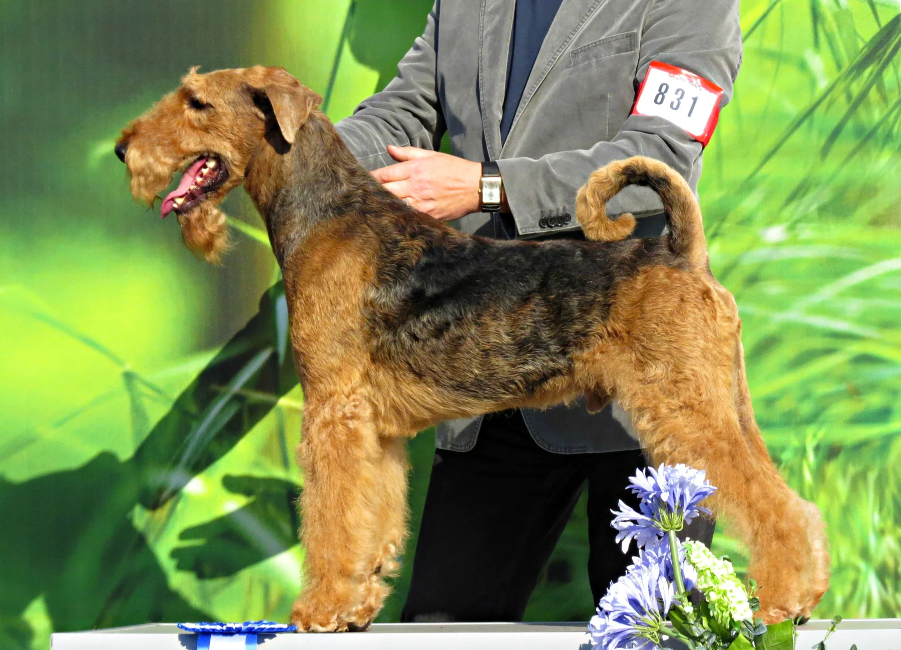

Маленькая собака · большой мир
Счастье
идёт с вами
по тропинке.
Лейкленд-терьер. Любопытный взгляд,
смелое сердце и радость быть рядом.
 ↗ Рассмотреть
↗ РассмотретьСегодня — рядом с нами
Обычная прогулка.
Целый мир открытий.
Замедлиться. Заметить свет между соснами.
Найти время для игры и просто побыть вместе.


Разные моменты — тот же характер
На лесной тропе и на городской прогулке.
Нажмите на снимок, чтобы рассмотреть его целиком.
 ↗ Рассмотреть
↗ Рассмотреть ↗
↗ ↗
↗ ↗ Рассмотреть
↗ Рассмотреть10 секунд · без звука · запуск кнопкой ▶
Между маленькими приключениями
Остановиться.
Смотреть,
как течёт река.
У прогулки бывает и такой ритм.
Тихая вода, отражения деревьев
и время просто побыть рядом.

А до этого — Англия
Характер
из Озерного края.
Зелёные холмы, каменные ограды и тропы между озёрами. Здесь начинается история лейкленда.
Читать историю породы ↗Наследие в характере
Исследователь
никуда не исчез.
Дома — любимый друг.
На прогулке — внимательный следопыт.

↗ Рассмотреть породуРабочие корни
Историческая задача — работа по лисице в сложном рельефе. Отсюда ловкость, настойчивость и готовность исследовать.
О рабочих линиях и современной охоте
Название «working Lakeland» в британских материалах не всегда обозначает ту же племенную популяцию, что выставочная порода. Масштабы современного охотничьего использования достоверно не установлены.
Инстинкт становится занятием
Поисковые игры и обучение дают любознательности выход. Совместные задачи — ещё один способ понимать друг друга.
Что такое испытания Earthdog
В США лейкленды допущены к Earthdog: поиску в искусственных подземных ходах с защищённым животным-приманкой. Это испытания, а не реальная охота.
Подробнее: история породы · Royal Kennel Club · рабочие линии · Country Life · Earthdog · допущенные породы · AKC
Любовь в повседневных делах
Что нужно
для счастливой жизни.
Хороший компаньон — это ещё и отношения,
которые вы строите день за днём.
 ↗
↗Движение
и впечатления
Ежедневные прогулки, новые запахи, игры и отдых. Нагрузку подбирают под возраст, самочувствие и характер конкретной собаки.
 ↗
↗Понятные
правила
Последовательное обучение с поощрением. Самостоятельному терьеру легче сотрудничать, когда он понимает задачу и радуется общению.
↗Уход
за шерстью
Жёсткая шерсть требует регулярного ухода. Расчёсывание и подходящий тримминг лучше обсудить с грумером, знакомым с породой.
 ↗
↗Место
в вашей семье
Время вместе, спокойное место для сна и уважение к границам собаки. Игры детей и питомца проходят под присмотром взрослого.
Лейкленд может стать прекрасным другом активной семьи. Перед решением познакомьтесь со взрослыми собаками породы и поговорите с ответственным заводчиком о вашем образе жизни.
О жизни с лейклендом · памятка клуба породы ↗↗Вместе — интереснее
Большой мир
начинается
с близости.
Игры, общие привычки и внимание друг к другу. Активному компаньону нужны движение, воспитание и бережное общение.